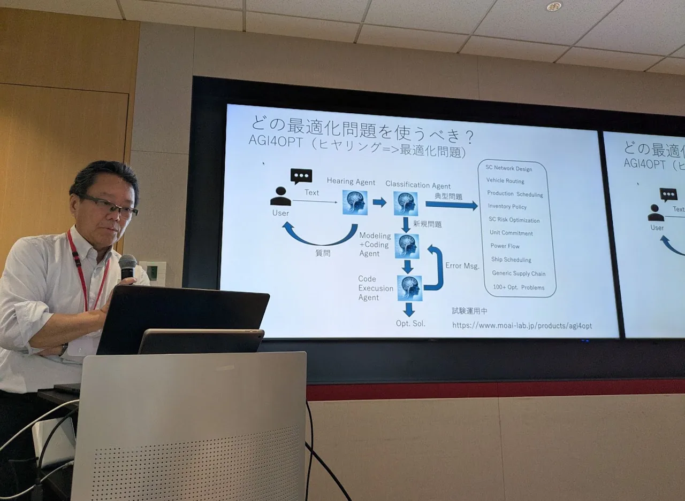
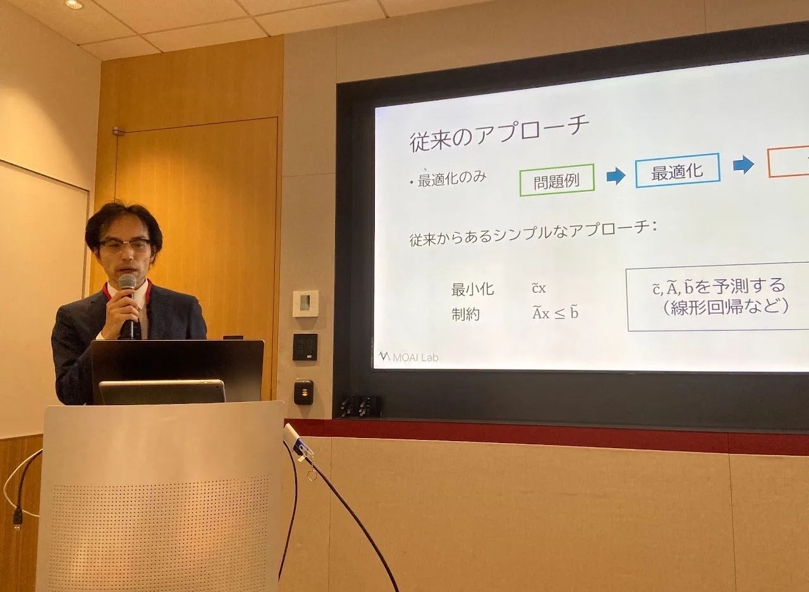
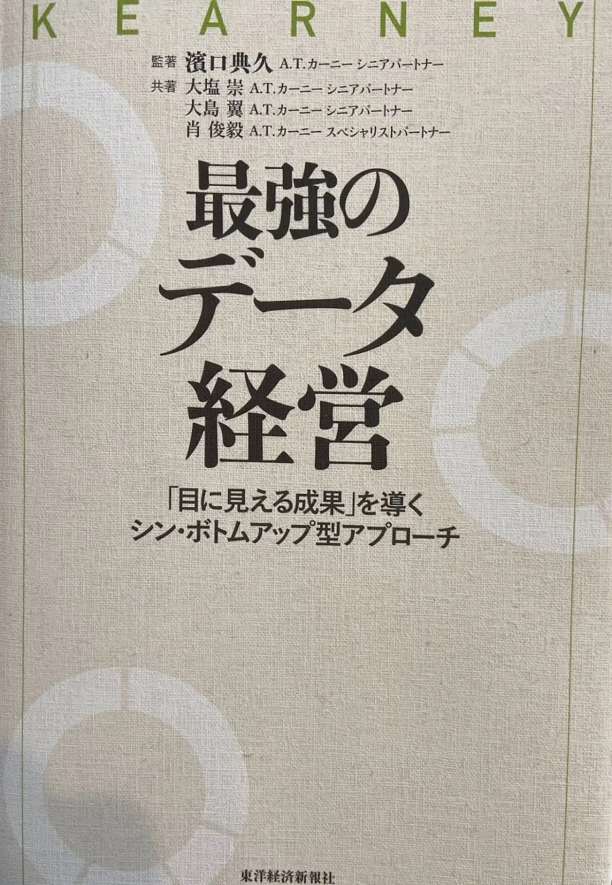

【無料：JX通信社 共催】2026年5月20日（水）
地政学リスク、為替リスク、災害リスク…様々なリスクに備え、サプライチェーンのレジリエンスを高めるには？
開催日：2026年5月20日（水）12:10〜13:00
参加費：無料
実施方法：Zoomにて開催いたします
【講演概要】
近年、地政学リスクや為替変動、自然災害の頻発により、サプライチェーンの不確実性は大きく高まっています。これからの企業には、効率化だけでなく、変化に強いレジリエントなSCMが求められています。
本ウェビナーでは、MOAI Labが提供する数理最適化×AI技術により、不確実な状況下でも「今とるべき最適な意思決定」を導く方法を解説します。
従来のような「過去のデータに基づいた予測」や「もしもの時のシミュレーション」に留まらず、膨大な制約条件の中から、リスク発生時に「今、何をすべきか」という最適解を導き出す最新の手法を解説します。
また、この最適化判断のリードタイムを極限まで短縮し、意思決定の精度を高めるための強力なツールとして、JX通信社のリスク検知サービス「FASTALERT」の活用についてもご紹介。情報の検知から意思決定までを一気通貫でつなぐ、次世代のリスクマネジメント戦略を公開します。
【こんな方におすすめ】
- SCM・物流・生産計画の高度化を検討している方
- 不確実性の高い環境での意思決定に課題がある方
- 属人化・Excel依存から脱却したい方
- AIを意思決定に活かしたい方
【登壇者の紹介】
登壇者：株式会社MOAI Lab
取締役 CTO 久保 幹雄
東京海洋大学教授 博士（工学）早稲田大学
Optimind アドバイザー、A* Quantum 取締役、株式会社Ridge-i技術アドバイザー。
最適化応用分野の第一人者で、数理最適化や機械学習などの数理手法を用いたサプライチェーン最適化の研究および応用においても第一線で活躍。大手企業の多数の最適化プロジェクトに30年以上にわたり技術提供を行っている。サプライチェーンや最適化に関する著書50冊以上。
登壇者：株式会社JX通信社
マーケティング担当 マネジャー 井戸 健介
東日本大震災の経験から、陸上自衛隊高等工科学校（58期）へ入校。病気による退職後、広告会社に入社し、企業の広告企画・マーケティング支援に従事。実務の傍ら、「メディア・広告ビジネスの価値共創」を研究し、修士（知識科学）を取得しました。
現在はJX通信社にて、マーケティングおよびサービスオペレーションを担当しています。
※企業にご所属の方を対象としております。個人の方、当社ならびにJX通信社の同業者のご参加については、お断りさせていただく場合があります。
※本ウェビナーはJX通信社と株式会社MOAI Labの共催となります。お申し込みいただいた方の申し込み情報の取り扱いについて、登録画面の注意事項をご了承のうえお申し込みください。
※Zoomからウェビナーへのアクセス方法が返信されますので、時間になりましたらPCやスマホからアクセスしてください。
※スマートフォンから参加するには、Zoomアプリのインストールが必要です。（Zoomのアカウントや利用登録は必要ありません）
※参加されている方のお名前や顔、音声は他の参加者には伝わりません。
最適化ソリューション開発を加速する―数理最適化モデリングツールAMPL活用セミナー
日時：2025年9月25日（木） 12:05〜12:50
形式：zoomによるオンライン開催
参加費：無料
【セミナー概要】
本セミナーでは、最適化ソリューション開発を加速させるモデリングツールAMPL（A Mathematical Programming Language）の活用法を解説します。
AMPLは1980年代後半にベル研究所で開発され、長年にわたる実績と技術的蓄積を背景に、学術界から産業界まで幅広く利用されています。
数理最適化問題を記述・解決するためのモデリングツールであるAMPLは、
・モデルとデータの分離
・ソルバー非依存性
・豊富で柔軟な構文
といった特長を備えており、効率的な問題解決を可能にします。
本セミナーでは、これらの特長や活用イメージを中心に、AMPLの魅力をコンパクトにお伝えします。初めてAMPLに触れる方でも、全体像をつかんでいただける内容です。
【こんな方におすすめ】
• AMPLに初めて触れる方、または基礎的な知識を効率よく身につけたい方
• 数理最適化の業務活用に関心があり、モデリングツールの基礎を学びたい方
• ランチタイムなどの短時間で、数理最適化モデリングの概念と実践をつなぐツールを知りたい方
• 最適化モデルの設計やソルバー活用の第一歩として、AMPLに興味をおもちのエンジニア・研究者の方
• PoCや新規プロジェクトで最適化ソリューションの導入を検討している方
【講師の紹介】
野々部 宏司
株式会社MOAI Lab 代表取締役 CEO 兼 創業メンバー、法政大学教授、博士（情報学）・京都大学
スケジューリング最適化ソルバーや制約最適化ソルバーの開発者で、開発したアルゴリズムは大手商用最適化ソルバーにも組み込まれています。
企業との共同研究を通じて、大規模実最適化の課題解決に豊富な経験を持ち、AMPL にも精通しています。
【AMPL詳細】
Agentic AI時代のサプライチェーン最適化セミナー
【開催報告】
2025年9月5日（金）、A.T. カーニー株式会社のご協力のもと、同社の本社（東京ミッドタウン・タワー23階）にて、弊社主催の「Agentic AI時代のサプライチェーン最適化セミナー」 および懇親会を開催いたしました。
本セミナーでは、以下のテーマを中心に講演を行いました。
| なぜいま最適化か？ | 久保幹雄 MOAI Lab CTO |
| 数理最適化と機械学習の融合 | 小林和博 MOAI Lab CAIO |
| SCMにおける最適化の全体像 | 久保幹雄 |
| スケジューリング最適化 | 野々部 宏司 MOAI Lab CEO |
| 配送・シフト最適化 | 斎藤 努 MOAI Lab CPO |
| AMPLによるモデリング | 野々部 宏司 |
当日は製造業やエネルギー分野を中心とする企業の皆様にご参加いただき、三十数名の方々とともに最新の知見や活用事例を共有する機会となりました。
また、ご参加いただいた皆様には、A.T. カーニー社より書籍『最強のデータ経営 ―「目に見える成果」を導くシン・ボトムアップ型アプローチ』 が無料で配布され、大変ご好評をいただきました。
セミナー終了後には懇親会も開催し、登壇者と参加者の間で活発な意見交換が行われ、最適化技術や機械学習技術の実務活用に関する具体的な議論が交わされました。ご参加いただいた皆様に心より御礼申し上げます。
今後も不定期にセミナーを開催する予定ですので、ぜひ次回もご期待ください。


